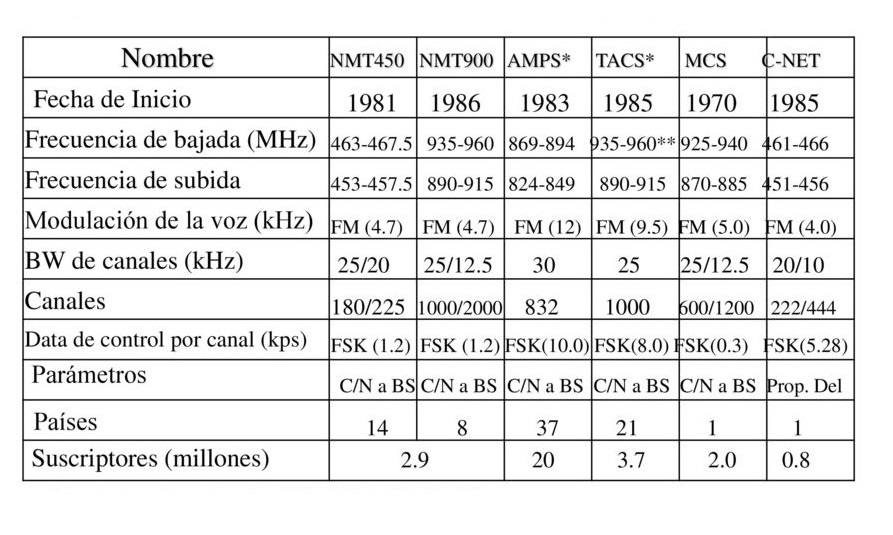
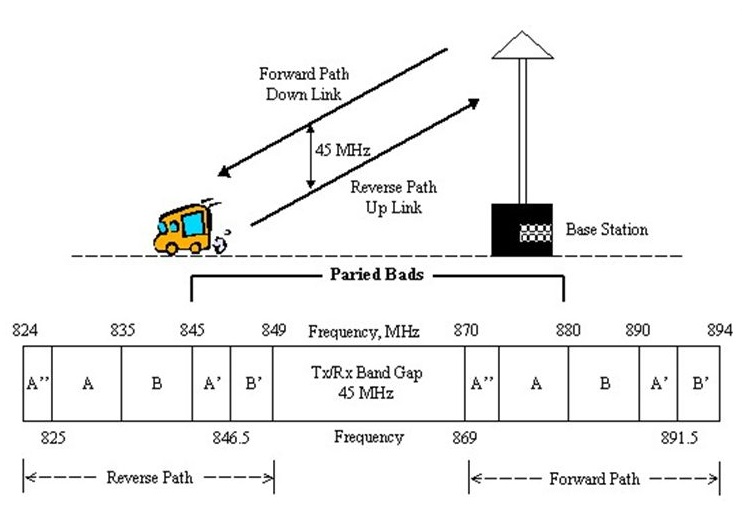

Parte del canal de voz de los celulares se reserva a la señalización fuera de banda
Limita la onda de la voz humana
Una llamada por canal
Video Informativo
Sistemas celulares analógicos

SISTEMA AMPS (Advanced Mobile Telephone Service)
CARACTERÍSTICAS
AMPS usa 832 canales dobles, formados por 832 simples de bajada y otros 832 simples de subida, cada uno de ellos con un ancho de banda de 30kHz
Ancho de cada canal de 45MHz
La banda de frecuencias de 824 a 849 MHz es para canales de transmisión
La banda de frecuencias de 869 a 894 MHz es para los canales de recepción
Método de acceso: FDMA/FDD
ESPECTRO ASIGNADO EN AMPS
BW = 49.92 MHz
1664 canales simplex o bien 832 canales duplex

ASIGNACIÓN DE CANALES
Designación de canales MS-BS
Designación de canales BS-MS
Asignación de Canales
CANALES DE VOZ (VC)
Señales que pueden existir sobre los canales de voz:
Voz
Datos (Control)
SAT
ST
Canales de Control, CC
Señales
Descripción del canal de control
El canal de control está compuesto de un Forward control channel (FOCC) y de un Reverse control channel (RECC).
Los canales FOCC y RECC están separados por 45MHz.
FOCC es codificado con (40, 28, 5) con el código BCH y modulado con FSK.
RECC es codificado con (48, 36, 5) el código BCH.
Bit rate = 10kb/s
La modulación FSK con desviación de 8kHz para representar un 0 ó un 1.
FOCC y RECC son full-duplex.
NÚMERO DE IDENTIFICACIÓN MÓVIL
TIPOS DE LLAMADAS
Llamada a un abonado móvil
Llamada de un abonado móvil
Liberación de la llamada
PROCEDIMIENTO DE HAND-OFF
Conversación sobre el canal xxx
El nivel del SAT o de RF cae por debajo del nivel umbral.
El BS1 envía al MSC un mensaje de solicitud de Hand-off.
El MSC debe localizar un BS con mejor recepción
LOCALIZACIÓN
El MSC envía una solicitud de nivel de señal del canal xxx a las celdas vecinas.
Las celdas vecinas mediante una unidad de localización, la cual cuenta con un receptor, realizan mediciones sobre el nivel del canal xxx y envían el resultado al MSC.
Con esta información el MSC debe de tomar la decisión relativa a que celda vecina observa mejor al canal xxx.
Evidentemente, el nivel observado por las celdas vecinas debe de ser mejor al nivel de la celda actual
PROCESO DE ROAMING
SEÑALIZACIÓN
Se lleva a cabo mediante un flujo de datos de 10 kbps que se transmite sobre los canales de control y también sobre los canales de voz.
Para su transmisión dicho flujo binario es modulado mediante el esquema de modulación FSK (Frequency Shift Keying).
BIBLIOGRAFÍA
F. Mazda, Cellular Radio STelecommunications Engineer's Reference Bookystems, 1993.
G. Rodríguez, «SISTEMA AMPS,» 2015. [En línea]. Available: http://www.spw.cl/05mar07_mobile/Material_moviles/amps.pdf.
W. Tomas, Advanced Electronic Communications Systems, New Jersey: Pearson, 2004.

 Archivos y Software
Archivos y Software